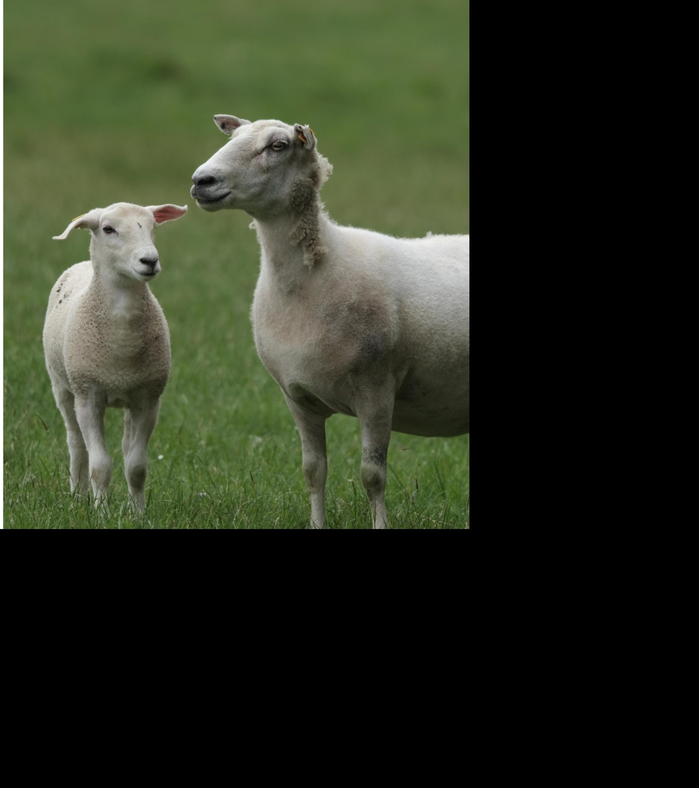

Hawke's Bay bred
Our Story
Located in the beautiful Hawke's Bay, we are dedicated to breeding top-quality Wiltshire sheep that are efficient, sustainable, and low-maintenance. Our stud embraces innovation, practical selection, and progressive farming technology to improve the traits that matter most.
We remain committed to continuous improvement, producing sheep that require fewer interventions while delivering strong productivity, profitability, and environmental stewardship.
